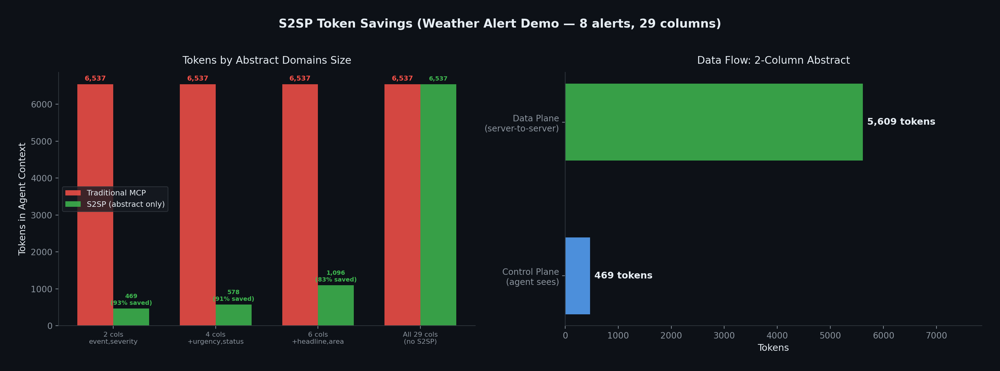

MCP-SD is a protocol pattern that lets an agent select which attributes of a tool result enter the LLM — the rest stays out. S2SP is its reference implementation, adding a Direct Data Interface (DDI) so the withheld body flows server-to-server in async mode or through the agent SDK out-of-band in sync mode.
Two features of the protocol: one for what the LLM sees, one for where the rest goes.
Selective Disclosure for MCP
abstract_domains parameter.Server-to-Server Protocol with a Direct Data Interface
mcp_sd, with server decorators, data-plane helpers, and agent adapters.S2SP supports two data-plane strategies. Both keep body data out of the LLM context — they differ in where the body lives in transit.
Body cached on the resource server. The consumer pulls it over the DDI (Direct Data Interface) — a dedicated server-to-server HTTP channel. The agent process never touches the body.
The agent process uses an SDK layer: the LLM sees the abstract only, while the DDI buffer carries the body out-of-band. Abstract and body stay separate before the consumer call.
Several recent designs apply progressive disclosure to MCP. MCP-SD addresses a different axis — selective disclosure — and composes with the others instead of competing with them.
MCP-SD = Selective Disclosure (control plane)
S2SP = MCP-SD + Server-to-Server Data Plane via DDI
| Scheme | Disclosure type | What's disclosed | When LLM sees it | Extra round-trips |
|---|---|---|---|---|
| Claude Skills | Progressive | Skill content (SKILL.md + scripts) | After model names the skill | +1 per first use |
| MCP Progressive Disclosure | Progressive | Full tool schema / inputSchema | After resources/read fetch |
+1 per tool first use |
| MCP-SD (impl: S2SP) |
Selective + data-plane delegation | Selected columns in LLM; body stays out | Same call; body stays out of LLM when S2SP routing is used | 0 |
abstract_domains="event,severity"). The agent doesn't have to spend an inference to decide "should I unlock more?" — it declares its attribute needs up front.Current MCP workflows often route full tool results through the agent. S2SP offers a selective-disclosure path for tabular results.
In the weather-alert demo, a 2-column abstract used 469 tokens instead of 6,537 for the full 29-column result. Actual savings depend on row count, column count, and selected abstract fields.
The demo's data-plane fetch completed in 7ms on localhost. Remote latency depends on the network path between the MCP servers.
The agent initiates and orchestrates all transfers. No data moves without agent authorization. The agent controls which servers receive each resource_url.
The SDK uses FastMCP plus common Python HTTP components: Starlette, uvicorn, httpx, pydantic, and anyio.
256-bit presigned URLs are single-use and use a 10-minute TTL by default. Production deployments should use TLS and appropriate server access controls.
S2SP uses standard MCP tools and JSON arguments. Traditional agents can call resource tools without abstract_domains and receive normal full results.
Route wide tabular query results from a database server to an analytics server. The agent can inspect selected columns, then let the consumer fetch the full selected rows.
Route CRM records, search results, alerts, or telemetry rows where the agent only needs a few fields to decide which rows a downstream tool should process.
Sync customer records from a CRM server to an email marketing server. Agent orchestrates the filter and sync; data moves directly between services.
Measured on 8 NWS weather alerts (29 columns each). The agent picks which columns it needs — the rest go server-to-server.

Data-plane fetch latency (7ms) measured on localhost. For remote deployments, latency depends on network distance between the two MCP servers, not the protocol overhead is the HTTP request plus JSON filtering and serialization.
Minimal resource and consumer server setup.
pip install mcp-sd
from mcp_sd import S2SPServer server = S2SPServer("weather-server") @server.sd_resource_tool() async def get_alerts(area: str) -> list[dict]: return await fetch_from_nws(area)
# 1. Control plane: agent gets only selected fields + _row_id result = get_alerts(area="CA", abstract_domains="event,severity,headline") # result.abstract = [{_row_id: 0, event: "Wind Advisory", ...}, ...] # result.resource_url = "http://..." # 2. Agent filters on abstract, picks rows it cares about selected = [row for row in result.abstract if "Wind" in row["event"]] # 3. Pass abstract rows to consumer — it fetches body from data plane draw_chart(abstract_data=json.dumps(selected), resource_url="http://...")
Learn what MCP-SD and S2SP are, why they exist, and the core protocol concepts.
Message types, state machine, transfer lifecycle, and security model.
Build S2S-capable MCP servers with the mcp_sd Python package.
Weather-agent demos for async mode, sync mode, and agent-framework adapters.